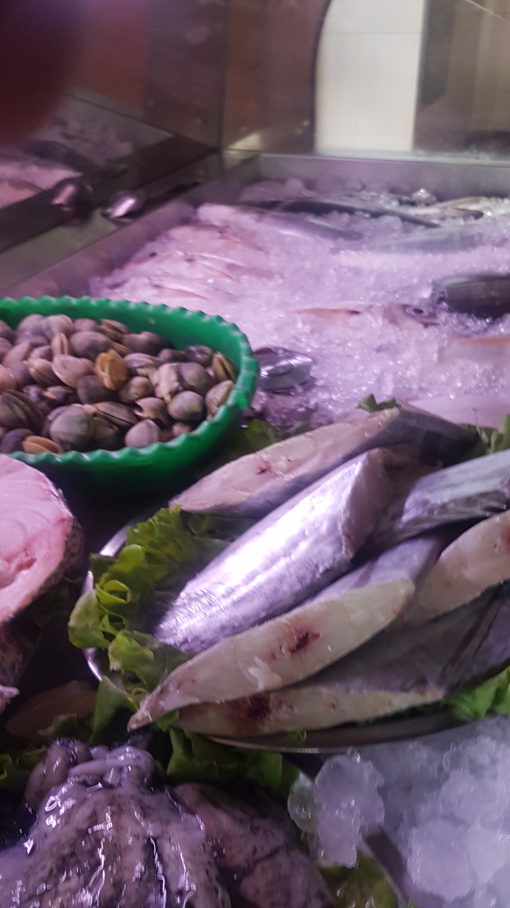
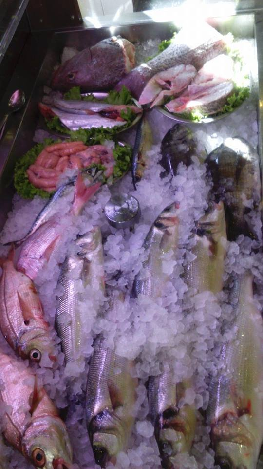
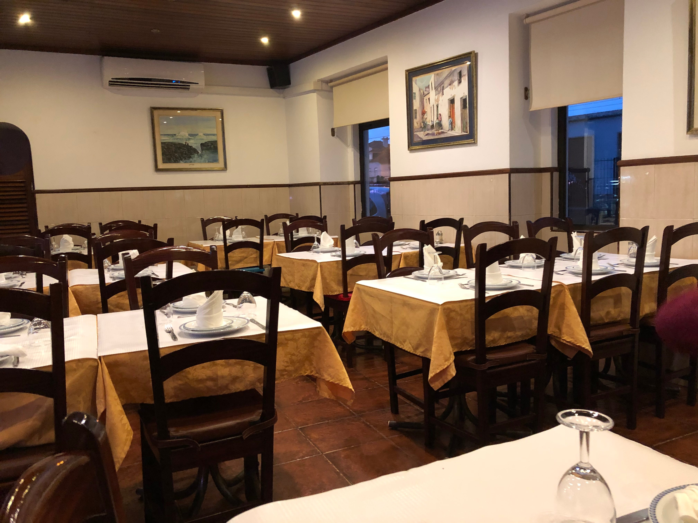

O peixe mais fresco da linha de Cascais,
numa mesa que parece de família
No coração de São Pedro do Estoril, mesmo ao pé da estação, o Zé Borlas é o sítio onde os locais vão há anos e os turistas regressam sempre que visitam a linha de Cascais.
A cozinha é honesta: peixe fresco da costa, arroz que absorve o mar, petiscos que chegam à mesa antes de saber o que pediu. O serviço é caloroso, falam inglês, e a conta nunca surpreende pela negativa.
Fresh fish, traditional recipes, genuine hospitality — and a price that makes sense.


Com mais de 411 avaliações e nota 4.7/5 no TripAdvisor, a fama fala por si.
★★★★★"Great local Portuguese restaurant with fantastic fresh fish and really friendly, accommodating waiters"
— Marco, 5★
★★★★★"Absolutely delicious and unbelievable value, staff provided great English assistance"
— Sarah, 5★
★★★★★"Um dos melhores restaurantes de peixe da linha de Cascais. Ambiente familiar, peixe absolutamente fresco e preços que surpreendem pela positiva."
— Cliente habitual
411 avaliações com nota média de 4.7 / 5 no TripAdvisor
Reservas por telefone ou apareça directamente. Temos sempre lugar para quem aprecia boa comida.
+351 21 466 0492Estamos mesmo ao lado da estação de São Pedro do Estoril — fáceis de chegar, difíceis de esquecer.